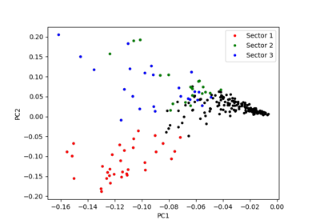

General examples¶

sphx_glr_auto_examples_plot_sca_with_own_metric.py
Running Cocoatree with specific metrics

Plot sector together with (phylogenetic) tree and metadata
Plot sector together with (phylogenetic) tree and metadata

The simplest SCA analysis ever
The simplest SCA analysis ever

Mapping original MSA, filtered MSA, PDB, and sectors
Mapping original MSA, filtered MSA, PDB, and sectors


Perform full SCA analysis on the S1A serine protease dataset
Perform full SCA analysis on the S1A serine protease dataset